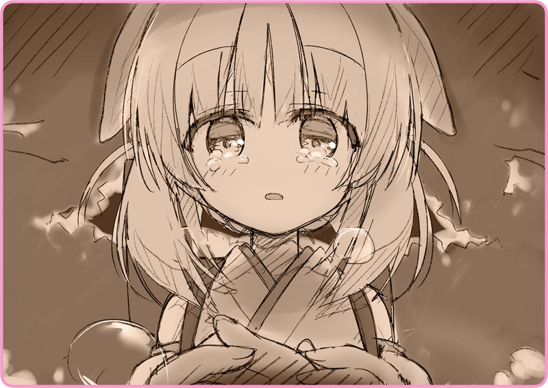

ゆっくりと近づいてくる姿がある。
いかにも心細い懐中電灯の灯りが、辺りを照らしている。リリアが持っていたものとおそらく同型。払い下げられる前の軍需品だ。人影の背後には、ひときわ大きな異形の姿。背中の煙突からとめどなく水蒸気を吹き出している。
「皇軍よ」
「見つかっちゃったみたいね。それも当然だけど……」
こちらを警戒した様子で、じりじりと近づいてくる。
時折月灯りを反射するのは、おそらく小銃だろう。
「灰桜、あなた皇軍の所属でしょう？」
「部屋で見つけたの、あなたのマスターのコート……襟元の徽章を。軍属の人なんでしょう？ それも当然だけど」
いまや
自律人形は戦争の必需品だ。そのマスターといえば大方検討がつく。
「皇軍に保護してもらって、それが一番安全よ」
「安心して、灰桜。私は行くわ……どこまでも走り続けるから」
実際のところ、リリアにはそれしか選択肢が無かった。
皇軍に捕らえられたところで、収容所送りになるだけだろう。人形を盗み出した罪を考えると、もっと重い罰が待っているのかもしれない。
「さよなら、灰桜。……ありがとう」
ストールを翻して、その場を去ろうとする。
「来ないで！」
慌てて追いすがって来ようとする灰桜を、厳しく押し留めた。
「ここまででいいの……あとは一人で行けるわ。あなたを危険な目に合わせたくない……」
「いいの。十分役に立った……私にとって最高の
自律人形だったわ」
滲み出した涙が、凍りついた睫毛を溶かす。
心配をかけまいと、にっこりとリリアは笑いかけた。
「大好きよ、灰桜」
そして、後ろを見ることなくリリアは走り始めた。
獣道をまっすぐ、つんのめりそうになりながらも駆けていく。
どこに？ 目的地はもうリリアには分かってもいなかった。ただがむしゃらに、体が動きを止めるその瞬間まで走り続けようと思った。
森の中に、一発の銃声がこだました。
＊ ＊ ＊
気がつけば、リリアは雪原の中に倒れ込んでいた。
冷え切った体にはなんの感覚もない。ただ静寂を切り裂いた轟音だけははっきりと覚えており、いまも耳鳴りが止まないでいる。
急な発砲音に驚いて、へたり込んでしまったのだと察した。早くこの場を離れないといけない。そう思って立ち上がろうとするが、体はぴくりとも動かない。どうやって二つの足で歩いていたのか、そのやり方をそっくり忘れてしまったかのような気すらする。
かろうじて動く手を伸ばして、太もものあたりを撫でる。
ぬるりと生暖かい感触がした。
「あぁ……」
眼前に持ってくると、濃密な鉄の匂いがする。出血している。やはり撃たれたのだ。もしかして足を？ だから体が動かないのだろうか……。
遠くで灰桜の声がする。
必死に雪を踏みしめて、近づいてくる様子も。
「お願い、来ないで……灰桜」
こんな姿を見られたくなかった。
きっとあの子のことだから、ひどく心配して心を痛めるだろう。早く皇軍に保護されて、安全な場所へ連れて行って欲しいと願った。
ここでお別れなのだから、どうあっても。

しかしそんな願いは断ち切られた。
その幼さが混じった声。すぐ側で、涙混じりに響いている。
「お別れだって……いったのに……」
どこかで怒号が響いている。
皇軍の兵士だろうか？ なにかひどく言い争っている。トラブルでもあったのかもしれないが、もはやリリアには関係がなかった。
「いいの、灰桜……やめて」
「当然の報いなのよ。私はいろんな人を裏切って……嘘をついてきた。だから罰があたったのね」
「あなたは不思議な人形ね……」
とめどなく瞳から冷却液……涙が溢れ出している。
「灰桜……嬉しかったわ。こんなひどい私を信じてくれて……なんの疑いもなく、受け入れてくれて……」
「あなたと一緒にいられて、私は……ほっとした。居場所が出来たって……そう思えた。そんな感覚、もう何年も味わったことがなかった……」
「……そんなものきっと、初めから無かったのよ」
そう、分かっていた。
そうでなければ、リリアを少女劇団に厄介払いして……手紙のひとつも寄越さないはずがない。
「もうすこし早く、出会えていれば……ううん」
そっと首を横にふる。
いまさら、そんなことを言っても仕方がない。
「私と出会ってくれてありがとう……灰桜」
ぎゅっと手を握ってくれる。
ぽかぽかと温かく、柔らかな手のひら。ひどくうら寂しい世界にあって、それだけが生命を感じさせた。
「ね……私のお友達で……いてくれる？」
「よかったぁ………」
ふう、と息を吐く。
なんだか体が軽くなったような、そんな気がした。
微かに大地が揺れている。
機械の駆動音が近づいてくる。
見上げるような体躯。赤く発光するカメラレンズ。手には機関銃……。
異形の兵士。
皇軍の機械人形だ。
灰桜は必死に訴える。
その瞳が赤く明滅しているのは、なにか人形にしか伝わらない暗号なのだろうか。
だが、その願いが伝わるはずもない。
リリアは逃亡者で、敵性国民で、罪人なのだ。
この国の誰かが救いの手をさしのべてくれるはずもない。
雪原に沈み込むような心地で、ゆっくりと目蓋を落とした。
人形たちの瞳の発光が、ぼやけた滲みとなって残る。
昔々、新年の日を思い出した。
雪の降る夜、家族みんなで食卓を囲んだっけ。
お父さん、お母さん、お兄ちゃん……
真っ赤な蝋燭を灯して、王冠型ケーキを食べて……はちみつの入った、甘いハーブティーを飲んだ。みんなで歌をうたったんだ。冬の花火……窓の外に光がまたたいて……その色も赤だったような気がする……幸せな日……私の居場所……そうだ…………あったんだよね…………愛しているって…………そう、言ってくれたんだよね………？

 「あの方々は……？」
「あの方々は……？」